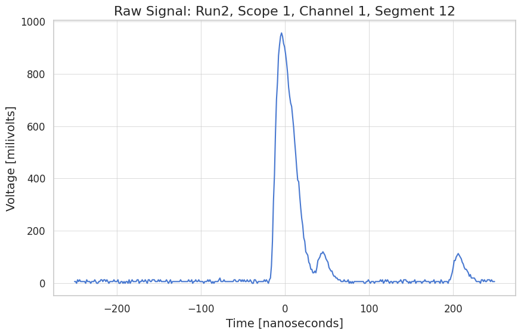
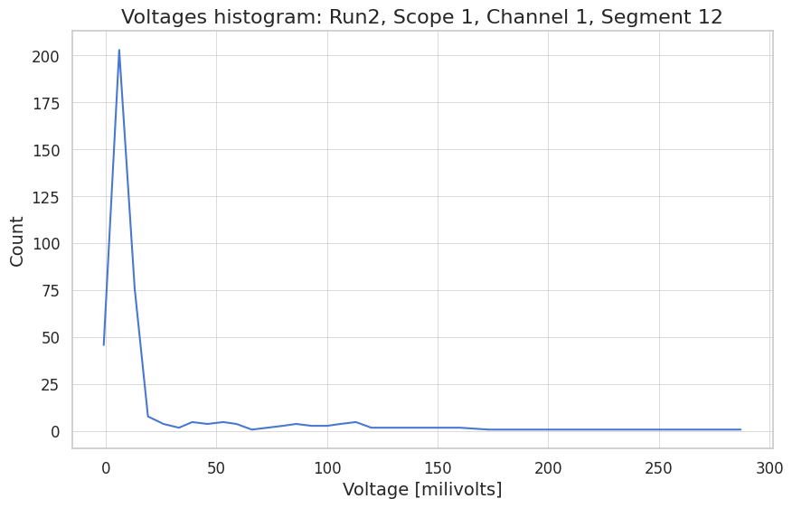
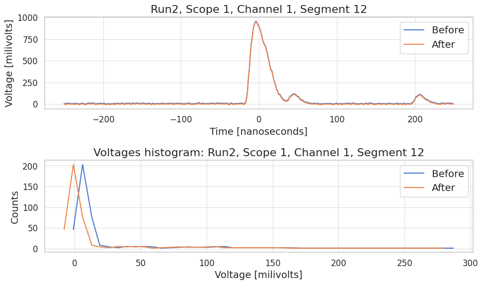
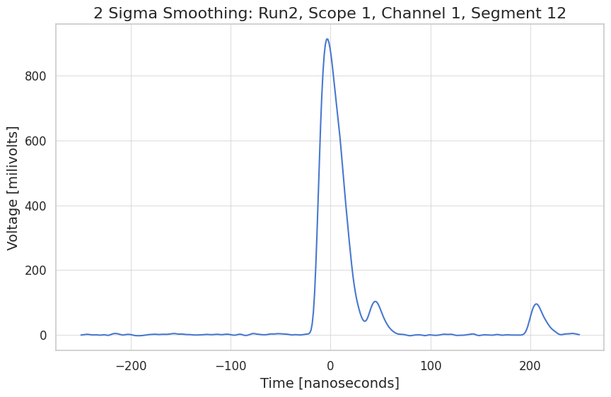
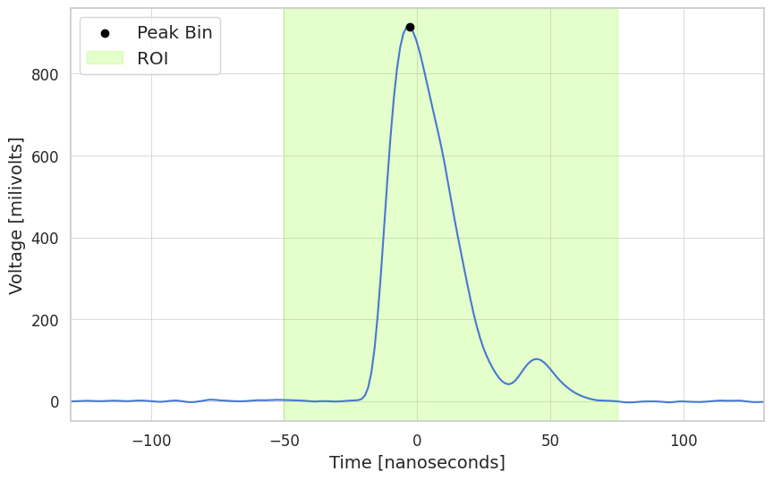

Wavefrom {Class} Demo#
from config.settings import ProjectRoot, LocalDataPath, PlotsPath
from config.plot_config import set_plot_style; set_plot_style()
# import the Waveform class
from models.waveform import Waveform
import os
import numpy as np
import matplotlib.pyplot as plt
import seaborn as sns
# Import parameters
from config.run_params_1 import (
PEAK_THRESH,
INGRESS_THRESH,
ROI_t_runs,
ROI_t_calib
)
---------------------------------------------------------------------------
ModuleNotFoundError Traceback (most recent call last)
Cell In[1], line 1
----> 1 from config.settings import ProjectRoot, LocalDataPath, PlotsPath
2 from config.plot_config import set_plot_style; set_plot_style()
4 # import the Waveform class
ModuleNotFoundError: No module named 'config.settings'
Class Description#
The Waveform class is the first in the reconstruction analysis chain, serving as the precursor the Event class. It handles a single waveform readout from one PMT trigger:
Reading of the csv and conversion to numpy arrays
Rescaling (i.e. making the signal positive, converting time units to nanometres and voltage to millivolts)
Baseline caluclation and corrections
Smoothing
Peak and ingress detection
# -- Define parameters -- #
# Choose the run number
run = 2
# Plotting window x-cuts
PLOT_CUT = 100
# Signal region of interest:
# Runs up to Run17 are flux measurements and are expected to centre around 0,
# while from Run17 onwards we have calibration measurements. Since the plates
# are now below the triggering calibration plates we expect the signals after 0.
if run < 17:
# Expected signal around zero
ROI_t = ROI_t_runs
else:
# Expected signal after zero
ROI_t = ROI_t_calib
Viewing of the Waveform Processing at Each Step#
Raw waveform loading
Rescaling to nanoseconds, +millivolts for easier interpretation
Baseline calculation
Baseline zeroing
Smoothing for more reliable peak detection
Detecting the main peak
Identifying the ingress of the peak, i.e. the time at which it starts rising.
1. Raw Waveform Loading#
# Pick scope, segment and channel
scope = 1 # [1,2]
seg = 12
ch = 1 # [1,8] for Runs [1,16], [1,4] for Runs [17, 30]
# Raw waveform loading
csvpath = os.path.join(LocalDataPath, f"Run{run}/scope-{scope}-seg{seg}-ch{ch}.csv")
wf = Waveform(csvpath)
# Get the x,y data from class and plot
x, y = wf.get_data(zipped=False)
plt.plot(x, y)
plt.xlabel("Time [seconds]")
plt.ylabel("Voltage [volts]")
plt.title(f"Raw Signal: Run{run}, Scope {scope}, Channel {ch}, Segment {seg}")
plt.show();

2. Rescaling#
xfactor = 1e9 # convert to nanoseconds
yfactor = -1e3 # convert to millivolts and flip signal to be positive
wf.rescale(xfactor=xfactor,yfactor=yfactor)
x, y = wf.get_data(zipped=False)
plt.plot(x, y)
plt.xlabel("Time [nanoseconds]")
plt.ylabel("Voltage [milivolts]")
plt.title(f"Raw Signal: Run{run}, Scope {scope}, Channel {ch}, Segment {seg}")
plt.show();

3. Baseline Calculation#
bin_mids, hist = wf.calculate_baseline(verbose=True)
baseline = wf.get_baseline()
# Plot the histogram of voltages, the baseline should be clearly visible.
plt.plot(bin_mids, hist)
plt.xlabel("Voltage [milivolts]")
plt.ylabel("Count")
plt.title(f"Voltages histogram: Run{run}, Scope {scope}, Channel {ch}, Segment {seg}")
plt.show();

4. Baseline Zeroing#
# ! If you run this block twice the difference would disappear, since the baseline would
# ! have already been removed.
fig, (ax1, ax2) = plt.subplots(nrows=2, ncols=1)
# Plot waveform before zeroing
x, y = wf.get_data(zipped=False)
ax1.plot(x, y, label = "Before")
ax1.set_xlabel("Time [nanoseconds]")
ax1.set_ylabel("Voltage [milivolts]")
bin_mids, hist = wf.calculate_baseline(verbose=True)
baseline = wf.get_baseline()
# Plot the histogram of voltages before zeroing
ax2.plot(bin_mids, hist, label = "Before")
ax2.set_xlabel("Voltage [milivolts]")
ax2.set_ylabel("Counts")
wf.zero_baseline()
# Plot waveform before zeroing
x, y = wf.get_data(zipped=False)
ax1.plot(x, y, label = "After")
ax1.set_xlabel("Time [nanoseconds]")
ax1.set_ylabel("Voltage [milivolts]")
ax1.set_title(f"Run{run}, Scope {scope}, Channel {ch}, Segment {seg}")
bin_mids, hist = wf.calculate_baseline(verbose=True)
baseline = wf.get_baseline()
# Plot the histogram of voltages before zeroing
ax2.plot(bin_mids, hist, label = "After")
ax2.set_xlabel("Voltage [milivolts]")
ax2.set_ylabel("Counts")
ax2.set_title(f"Voltages histogram: Run{run}, Scope {scope}, Channel {ch}, Segment {seg}")
ax1.legend()
ax2.legend()
fig.tight_layout()
plt.show();

5. Smoothing#
sigma = 2 # Default is = 2
wf.smooth(sigma=sigma)
x, y = wf.get_data(zipped=False)
plt.plot(x, y)
plt.xlabel("Time [nanoseconds]")
plt.ylabel("Voltage [milivolts]")
plt.title(f"{sigma} Sigma Smoothing: Run{run}, Scope {scope}, Channel {ch}, Segment {seg}")
plt.show();

6. Detecting the Main Peak#
# Convert region of interest to index
x,y = wf.get_data(zipped=False)
a = np.argmin(np.abs(x - ROI_t[0]))
b = np.argmin(np.abs(x - ROI_t[1]))
ROI_idx = [a,b]
# Run peak detection method
wf.detect_main_peak(ROI_idx, 125)
try:
peak_idx, peak_val = wf.get_main_peak()
plt.scatter(x[peak_idx], y[peak_idx], color = 'black', zorder=3, label = "Peak Bin")
except:
print("No peak detected")
plt.axvspan(ROI_t[0], ROI_t[1], color = 'lawngreen', alpha = 0.2, label = 'ROI')
plt.xlabel("Time [nanoseconds]")
plt.ylabel("Voltage [milivolts]")
plt.xlim(x[PLOT_CUT], x[-PLOT_CUT])
plt.legend()
plt.plot(x,y);

# Convert region of interest to index
x,y = wf.get_data(zipped=False)
a = np.argmin(np.abs(x - ROI_t[0]))
b = np.argmin(np.abs(x - ROI_t[1]))
ROI_idx = [a,b]
wf.identify_ingress(25, ROI_idx)
try:
ingress_time_val = wf.ingress_val
plt.scatter(ingress_time_val, INGRESS_THRESH , color = 'black',
zorder=3, label = f"Ingress Bin: {np.round(ingress_time_val,2)} [ns].")
except:
print("Failed to detect ingress time.")
plt.axvspan(ROI_t[0], ROI_t[1], color = 'lawngreen', alpha = 0.2, label = 'ROI')
plt.xlabel("Time [nanoseconds]")
plt.ylabel("Voltage [milivolts]")
plt.xlim(x[PLOT_CUT], x[-PLOT_CUT])
plt.legend()
plt.plot(x,y)
plt.show()

"""
# Convert region of interest to index
x,y = wf.get_data(zipped=False)
a = np.argmin(np.abs(x - ROI_t[0]))
b = np.argmin(np.abs(x - ROI_t[1]))
ROI_idx = [a,b]
wf.identify_ingress(25, ROI_idx)
try:
ingress_idx, ingress_time_val = wf.get_ingress()
plt.scatter(x[ingress_idx], y[ingress_idx], color = 'black',
zorder=3, label = f"Ingress Bin: {np.round(ingress_time_val,2)} [ns].")
except:
print("Failed to detect ingress time.")
plt.axvspan(ROI_t[0], ROI_t[0], color = 'lawngreen', alpha = 0.2, label = 'ROI')
plt.xlabel("Time [nanoseconds]")
plt.ylabel("Voltage [milivolts]")
plt.xlim(x[PLOT_CUT], x[-PLOT_CUT])
plt.legend()
plt.plot(x,y);
"""
-18.896772451875634
Using the Waveform Class to Calculate Arrival Time Delay#
# Define a function to automatically fully process the csv waveform file
# (Make sure to first run 'define parameters' block at the top of the notebook)
def process_waveform(csvfile):
wf = Waveform(csvfile)
wf.read_from_csv()
wf.rescale(xfactor=1e9,yfactor=-1e3)
wf.calculate_baseline()
wf.zero_baseline()
wf.smooth()
x,y = wf.get_data(zipped=False)
plt.plot(x,y)
a = np.argmin(np.abs(x - ROI_t[0]))
b = np.argmin(np.abs(x - ROI_t[1]))
ROI_idx = [a,b]
wf.detect_main_peak(ROI_idx, 125)
wf.identify_ingress(25, ROI_idx);
try:
peak_idx, peak_val = wf.get_main_peak()
except:
print("No peaks detected")
try:
ingress_time_val = wf.ingress_val
plt.scatter(ingress_time_val, INGRESS_THRESH,
zorder=3, label = f"Ingress Bin: {np.round(ingress_time_val,2)} [ns].")
except:
print("No ingress detected")
return ingress_time_val
# Scope and segment must be the same for both channels to make sense
# channels have to come in pairs (1,2), (2,3) etc to make sense
# Pick scope, segment and channel
scope = 1
seg = 12
ch = 1
# Raw waveform loading
csvpath_1 = os.path.join(LocalDataPath, f"Run{run}/scope-{scope}-seg{seg}-ch{ch}.csv")
# Pick scope, segment and channel
scope = 1
seg = 443
ch = ch + 1
# Raw waveform loading
csvpath_2 = os.path.join(LocalDataPath, f"Run{run}/scope-{scope}-seg{seg}-ch{ch}.csv")
# Process waveforms
ingress_time_val_1 = process_waveform(csvpath_1)
ingress_time_val_2 = process_waveform(csvpath_2)
plt.axvspan(ROI_t[0], ROI_t[0], color = 'lawngreen', alpha = 0.2, label = 'ROI')
plt.xlabel("Time [nanoseconds]")
plt.ylabel("Voltage [milivolts]")
plt.xlim(x[PLOT_CUT], x[-PLOT_CUT])
# Get the arrival time delay
atd = np.round(ingress_time_val_2 - ingress_time_val_1, 2)
print(f"Arrival time delay: {atd} [ns]")
Arrival time delay: 4.67 [ns]